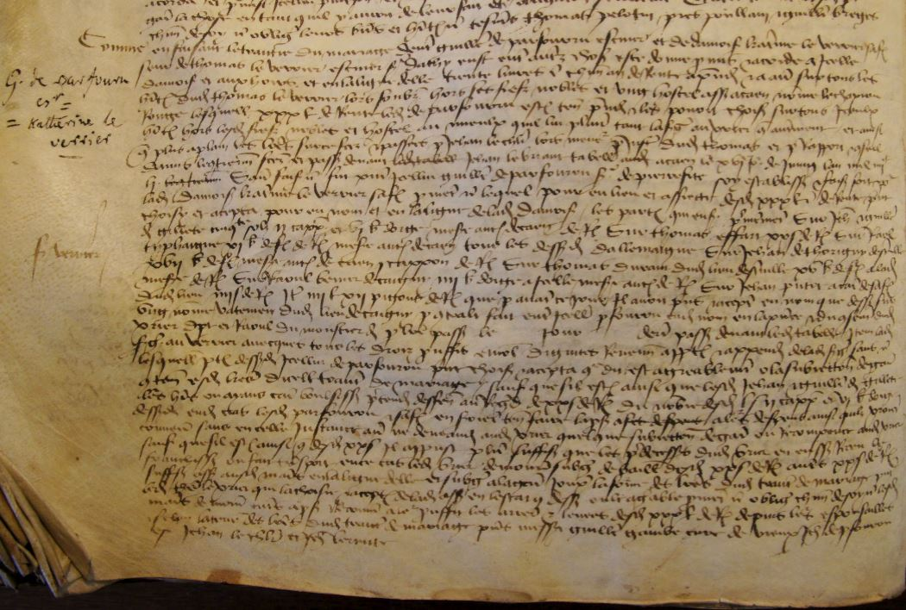

DOCUMENTS
NOTARIAUX (2/2)
DOCUMENTS
NOTARIAUX (2/2)
DOCUMENTS
NOTARIAUX (2/2)
DOCUMENTS
NOTARIAUX (2/2)
NOTARIAT DE CORMOLAIN
Référence : 5E 13407
Provenance : Archives Départementales de la Manche,
via Jean-Pierre Guilloux
dev[ant] lefran[çois] et postel
Pour parvenir au mariage qui au plaisir de dieu sera faict et acomply en face de n[ot]re Mere la s[ain]te eglize catholicque, apostollicque et romainne Entre honneste homme Jacques fils soeul et heritier de gilles le Cucgu et de Marie buot ses pere et mere d'une part, et de damoiselle Catherine fille de feu Robert de parfouru vivant es[cuye]r s[ieu]r de planterot et de cristine gourdier d'autre tous deux des parr[oisses] de la barre et de semilly a esté promis et accordé auxd futurs mariez en faveur dud mariage par Mathieu de parfouru es[cuye]r leur fils p[rese]nt et du consentement de sad mere et comme tutrice pour dot heredital la somme de deux cents livres constitués en quatorze livres de Rente Racquitable en deux termes esgaulx et pour don mobil la somme de deux cents livres payables scavoir cent livres lors des espousailles et les aultres cent livres a dudict jouren un an pour tout et tel part quelle peut pretendre a la succession de sesd pere et mere avec en oultre un cosfre de bois chesne fermant a clef un lict garny de plumes traversain et oreillers, couverture courtinne et Rideaux une robe de sarge Roze noire façon de Sainct lo avec deux cotillons l'un de sarge forte et l'autre de Raze(?) de Cotilleux a la vollonté de la fille, trois vaches, un tonneau de gros sildre arrivant l'année de grace, deux boisseaux de froment, deux moultons gras, une poille d'arain, quatre plats, quatre escuelles, et six asiettes(?), un ? et une chopine et du linge a la vollonté de lad mere faict en p[rese]nce et du consentement de Richard de parfouru esc[uyer] oncle paternel de lad fille, honneste homme homme thomas Ravend Martainville, richard guerard, pierre buot fils Jean, Joachim bisson, M[aitr]e Jean et Mathieu gourdier ad[voc]at Richard et charles gourdier freres et de gilles le Cucgu pere dud Jacques qu'il a promis garder sa succession a son dict fils en faveur dud mariage et en cas qu'ils ne peustent(?) s'acommoder ensemble l'a assigné par le pnt de la moitie en ce quy luy peut apartenir sur la parr[oisse] de semilly, avec une maison size sur la parr[oisse] de la barre qui se consiste en grange et cellier et d'une piece de terre nommée les Vallées sur le Vivier pnts aussy Jacques et Pierre Buot freres Simon et Isaac le Cucgu M[aitr]e Richard le Miere pbre Jacques Lemiere son frere et M[aitr]e Jacques le Roy pbre Curé du lieu de la barre de semilly tous parents et amis paternels et maternels desd futurs maries le saize iesme jour de febvrier mil [six cent] cinquante et un
Marques de Catherine de Parfouru, lad mère, Isaac Lecuqu, signatures de Lecuqu, Lemière, Gourdier, Guerard, Ravend, la Roy, Lecuqu, Gourdier, Gourdier, Bisson, Buot, de Parfouru
Référence : 5E 13409
Provenance : Archives Départementales de la Manche,
via Jean-Pierre Guilloux
Du dimanche vingt sept jour doctobre mil six cents cinquante & deux devant les tabell[ions] a cormol[lain]
fut p[rése]nt hon[orable] homme thomas Le Crosnier chapellier bourgeois de Sainct Lo Lequel de sa bonne vollonté Recongneut avoir vendu quité cedé & dellaissé affin dherittage pour Luy & ses hoirs a Richard de parfourru esc[uyer] sieur de haulte fonctaine de la parr[oisse] de la barre de semilly p[rése]nt c[est] a scavoir cinq vergées de terre que led Le Crosnier possede a droict de conquest par luy faict de Guill[aume] de Sainct Laurent de la parr[oisse] d'aigneaux a prendre par mesure dans une plus grand piece assize aud lieu de la barre nommée les Grands hauts Champs par devers les heritt[iers] Robert de parfourru et faisant lesd cinq vergées buts et costes lesd herittiers de parfourru a cauze du surplus Le chemin des fourches(?) et en laquelle mesure doibvent estre comprins les haie & fosses sellon le contract dud acquest Item vent aud Sieur une masure a Luy apartenant par sond contract estante au bout de la maison Manab[le] dudict Guill[aume] de Sainct Laurent size en lad parr[oisse] de la barre dans un jardin nommé le Clos hue sellon que le tout est plus au long desclaré aud contract dacquest passé devant Jacques Girard & pierre baudet tabell[ions] a Saint Lo le dix Jour daust mil six cents cinquante & un controllé le douze dud mois & an audien[cé](?) aud lieu de la barre le dimanche traze dud mois & an presentement baillé aud sieur de haulte fonctaine pour jouir tant desd cinq vergées que lad masure & de touttes les attributions qui sont acquizes par icelluy Le Crosnier [...] Icelle vente & delaissance faicte par & moiennant la prix & somme de trois cents cinquante livres tournois en prin[cip]al & trente souls ts de vin le tout quicte & du nombre de laquelle somme prin[cip]alle il est demeuré entre les mains dud sieur acquer[eur] la somme de sept vingts livres tourn[ois] pour par luy faire la continuation & paiment a Ladvenir de dix livres ts de Ren[te] dont led Le Crosnier Sestoit chargé pour led de Sainct Laurent par sond contract d'acquest [...] et pour le reste de lad somme prin[cip]alle revenant a deux cents dix livres il a esté p[rése]ntement paié comptant aud vendeur en Loys d'or & d'argent & autre monnoye ayant cours & mize a Lesdict du Roy [...] fait a Cormollain [...]
Marque de Thomas Lecrosnier (TO), signature de Richard de Parfouru
Référence : 5E 13428
Provenance : Archives Départementales de la Manche,
via Jean-Pierre Guilloux
Le 4 septembre 1669, par la conférence de jours entre Guillaume St Laurent et Gabrielle Lecoqu héritiere en sa troisième partie de feu Charles Lecoqu et de feue Catherine de Parfouru ses parents et aussi de Dlle Gabrielle de Parfouru sa tante ainsi que de Jacqueline de Cauvelande son ayeulle et de feu Denis Lecoqu son oncle. Pierre de St Laurent et Françoise de La Bigne sa femme fille de feue Charlotte Lecoqu sa mère soeur de Gabrielle [...]
Référence : 5E 13428
Provenance : Archives Départementales de la Manche,
via Jean-Pierre Guilloux
Ce sont deux lots & partages des heritages ayant apartenu a defunt robert de parfouru esc[uyer] vivant esc[uyer] s[ieu]r de planterot et succedes a Mathieu & robert de parfouru esc[uyer] ses enfans que fait Led Mathieu de parfouru esc[uyer] fils aisney a laquelle il produit a damoiselle christine Gourdhier leur mere & tutrice dud robert et parent delegue & consenti(?) conseulaire de la tutelle pour en proceder a la choisie de l'un diceulx et Lautre Luy revient par non choix suyvant & conformement a La teneur de Lacord fait entreux
premierement
quy aura le premier Lot Il aura Lentre... de planterot avec le ? & mesnages sans Reserva[ti]on aucune qui fait buts & costes George de parfouru esc[uyer] les heritiers pierre buot Louis Guerard & le chemin du Vilage
Item il aura le prey buot co[mm]e il se contient avec les droict qui en dependent qui fait but & costez led chemin du vilage, Michel & pierre buot & les heritiers Guilaume buot
Item il aura la piece du clos aucornet(?) co[mm]e elle se contient qui fait but & costez Richard & michel buot les heritiers Jacques haymel & led chemin Item il aura sept livres de rente sur les heritiers gilles Le Mierre fontiere(?)
Item Sept livres sur Jean gourd ? Mathieu dilaie
Item il en aura sept livres sur les heritiers pierre buot & sur les heritiers adrien de viliers le tout ypoteque
qui aura Le Segond & dernier Il aura sept pieces de tere labourable size aud vilage de planterot les deulx premiers no[mm]e les vignete qui font butz & costez les heritiers pierre buot et piere buot et le chemin de can Les deux autres no[mm]e la Voe de thorigny & les Malais qui jouxte Jacques Le cuqu Les heritiers adrien de viliers Jacques durand Le chemin de Can é de thorigny la cinq ie no[mm]e le Jeune Jardin de la fosse qui bute & jouxte led chemin, led durand Jacques de st Laurens & richard buot, La six ie no[mm]e Le Mont Joue qui jouxte & bute nicolas Croquevielle, Led Georges de parfouru esc[uyer] La voie du fourcher & Jouachim Croquevieille La Sept ie no[mm]e La Marre de Lacre(?) Led georges de parfouru esc[uyer] Le chemin de falaize & gilles Le Mercere
Item il aura un petit prey estant aud vilage de Continence de dix sept perches ouviron quelques Murales dessus estant qui jouxte led chemin du Vilage Richard buot & Louis Guerard
Item il aura la terre prinse et faite par led feu leur perre size a st Jean des baisant a charge de en paier les rentes dicelle fiefe sans que le premier lot en soit en rien recharger selon & recours au contrat dicelle
Item il aura vingt & une Livres de rente Sur gilles pacarin un poulet & un chapon et celuy qui aura le dernier lot il aura vingt souls de rente sur la terre & sieurie de pierrefitte de retour de partage et outre payront les rente & charges Seigneurialle chacun de son ? Sans y apeler Lun Lautre oules defendront & soufriront le douaire de leur merre par moitie sur chacun leur lot et payront les deptes sy aucune y en a ausy par moitie [...] faict & baillé ce vingt sept jour daout mil six cents soixante & sept
signature Parfouru
[...] Aujourdhuy dix huict jour de septembre mil six cent soixante et sept les lots de ? ? ont esté mis devant les tabell[ions] ? par lad dam[oise]lle Christine Gourdier mere desd partageants et ce fut suivant et vertu de la dellibera[ti]on passée ce jourdhuy par les sieurs parents dud Robert de parfouru soubs leurs signes prives conten[ant](?) authorisation a Lad dam[oise]lle de ce faire desclara quelle prend et choisit pour Led Robert de parfourru esc[uyer] est le second et dernier desd lots en partant Le premier d Iceuls est demeuré par non choix aud aisné suivant Les Clauzes d Iceulx ce que Lad dam[oise]lle a signé a Semilly pnts de Jacq[ues] thouroude Laboullaye et francois durand dud Lieu
Marque de la damoiselle, signatures de Thouroude et Durand
Référence : 5E 13943
Provenance : Archives Départementales de la Manche,
via Jean-Pierre Guilloux
Comme ainsy soit que en traitant Le mariage quy au plaisir de dieu sera faict et aconply en face de nostre Mere Ste eglise entre pierre Langlois fils Jean et Gillette Lemiere ses peres et meres de la parr de st Jean des baisants d'une part et de dam[oise]lle Susanne de parfouru fille de Jean de parfouru vivant es[cuye]r Sr de La petitiere et dam[oise]lle Louise deloucelle de La parr de Condé d'autre apres que Lesd futurs Se Sont Respectivement donnee La foy et promis Sepouser a La premiere Requisition Il a esté en faveur du p[rése]nt promis par Lad dam[oise]lle de Loucelle Mere et tutrice en atendant la part de Lad dam[oise]lle future aux Meubles et Immeubles tant de pere que de mere La so[mm]e de vingt Cinq Livres de Rentes par chacun an à courir du Jour des espousailles d'an en an et en oultre à esté promis co[mm]e dessus La so[mm]e de Cent Livres pour le trouseau et abits de Lad fille avec ce quelle peut avoir de son peculle a esté ausy promis et acordé par ce p[rése]nt que en Cas que Lad fille presedat Led futur de Mort Sans enfant Il Relevera prealablement Sur le plus Clair de ses biens et Subcetions La so[mm]e de Cent Livres une fois payé pour reconpencer des frais et enploits nesesaire estre faits à tel cas et en faveur de ce Led Jean Langlois pere dud futur à asigné et asigne par ce p[rése]nt Led son fils d'une Maison aproprié a salle et boulengerie avec le nombre de unze vergees de terre ou viron et en tant qu'il y a dans trois pieces en terre Sentretenant ensenble Lune nommee Les dra... Laultre La Chanpaigne Laubert et Laultre le Chanps Mahieu tenues de la sieurie duvallaville(?) en Cas quil ne puissent conpatir Leur mesnages ensemble a ce p[rése]nt Gilles Langlois fils aisné frere dud futur Lequel à Renoncé a predre ny retenir aucun preciput de faire Lieuchevel(?) se reservant La Choissie des Lots quy Luy Seront faictes par Led Son frere co[mm]e en parel Il est demeuré dacord entre Lesd Langlois pere et fils que Led Gilles na prins ny prend aucun ameublesement(?) avec led son pere et que demesme Led pierre ny en prendra au temps de son mariage non plus que le fils aisné Constant entre eux que ceque Led Gilles fils aisné à et posede en son non tant en meubles Rentes quautrement Il est provenu de son peculle de Mariage et Renonce a y rien pretendre ne desmander La mesme chosse de ce que Led pierre posede en son non Ce sans quoy Les presente pactions nauroient esté faictes ny aconplie Le tout faict et acordé en La p[rése]nce advis et Mediation de Jean debreboeuf esc Sr dupont Jacques et Michel de Loucelle esc Sieurs de Mauny et de Martin Jean de parfouru esc Mathieu et Robert de parfouru escr Sr de planterot Jean Langlois fils hervé Charles desfaudays pierre Lemyere fils Jacques pierre Lemyere fils Gilles Gilles decarville Joachin aze damoiselle anne de parfouru Seur de lad future Jean osouf Joachin Lemyere et plussieurs aultres au Jour d'huy vingt Cinq jour de novenbre 16 quatre vingt sept [...]
Signatures de de Brebeuf, Louise de Loucelles, J de Loucelles, Lenglois, Lenglois, Carville, Lemiere, Lemiere, marques de Anne de Parfouru, la future, Jean Langlois
[reconnu le 27-12-1689 par Pierre Langlois fils Jean, et damoiselle Louise de Loucelles, présence dudit Jean père]
Référence : 5E 2127 f°129
Provenance : Archives Départementales de la Manche,
via Alain Aubril
Le 30 mai 1710, Jacques Goueslard
écuier demeurant à Coutances baille à Marie
Thérèse et Anne Goueslard ses deux filles une pension
viagère de 25 livres chacune. A prendre à la St
Barnabey sur les héritiers ou représentants de feu Guillaume et René de Parfouru frères de deffunte Françoise de Parfouru. Françoise de Parfouru
est indiquée grande mère dudit Goueslard, lesquels lui
sont redevables de ladite partie de rente à cause de deffunte
Catherine Fréret, mère dudit Sieur Goueslard devenue
héritière en sa partie de ladite Françoise de Parfouru sa mère en vertu de son contrat de mariage et autres passé devant les notaires de Saint-Lô.
Référence : 7E 92
Provenance : Archives Départementales du Calvados,
prise de vue, montage et transcription, Denis Lethimonnier, novembre 2016
Relation1 du contrat de mariage passé entre Guillaume de Parfouru et Dlle Catherine Le Verrier, dans un acte daté du 4 novembre 1453
Nota : les abréviations des textes sont restituées en italiques, les lacunes ou note du transcripteur entre crochets, la ponctuation ajoutée si elle n’existait pas et seuls les accents finaux sont portés pour faciliter la lecture.

[note marginale2 :]
G. de Parfouru
escuier =
= Katherine Le
Verrier
[note marginale :] Faict [audict] Verrier
Comme en faisant le traictié de mariage d'entre Guillaume de Parfourru, escuier et de damoiselle Katerine Le Verrier, sa femme,
seur de Thomas Le Verrier, escuier, sieur d’Athy3, eust entre autrez choses esté donné, promis et acordé a icelle
damoiselle et aux hoirs et en la ligne d'elle, trente livres tournois chacun an de rente a prendre et a avoir sur tous les
heritages dudict Thomas Le Verrier, lors soubz aagé, hors ses
fiefz nobles et ung hostel assis a Caen nommé le Chapiau
Rouge4, lesquelles XXX livres de rente ledict de Parfourru estoit tenu prendre et les povoit choisir sur tous iceulx
heritages hors lesdictz fiefz nobles et hostel au mieulx qu’il
lui plaira tant la seigneurie au Verrier que autrement et ainsi
que plus a plain les lettres5 sur ce, faictez et passées par Jehan Le Chevalier, lors meneur par justice dudict Thomas et par rapport et conseil
d’amis, legitimement faictez et passées devant ledict
tabellion Jehan Le Briant, tabellion, audict a Caen, le XVIe jour de
juing l’an mil IIIIct
LI legitimement. Savoir faisont etc. fut present icellui Guillaume de Parfourru, sieur de Pierrefite, soy establissant et faisant fort pour
ladicte damoiselle Katerine Le Verrier sa femme, promet etc. lequel en
lieu et assiecte desdictes XXX livres tournois de rente, present,
choisy et acepta pour en nom et en la ligne de ladicte damoiselle, les parties6 qui eussent, premerement sur Jehan et Guillaume
dictz Gillete, cinquante solz, II cappons et VI boissaulx d’orge
mesure antienne de Caen, de rente, sur Thomas Essart, XX solz de rente,
sur Raol
Typhaigne, XI boissaulx de fourment de rente mesure antienne de Caen, tous les dessusdictz d’Allemaigne7, sur Jehan de Thorigny de Secville8
XVII boissaulx de fourment de rente mesure antienne de Caen, I cappon
de rente sur Thomas Durant dudict lieu de Secville, XV boissaulx de
fourment a ladicte
mesure de rente, sur Raoul Benier de Caigny9, IIII boissaulx d’orge a icelle mesure antienne de rente, sur Jehan Putot a cause de sa femme
dudict lieu, IIII solz de rente, I t…, IIII l…10, XII pigons11 de rente, que par avant, ce pour il avoit prins et acepté en nom que dessus sur
ung nommé Vatemen dudict lieu de Caigny par contralt fait entre icellui Parfourru eudict nom, en la presence et du consentement dudict
Perrier Dupart et Raoul du Moustier donné par lettre
passée le [blanc] jour [blanc] derrain passé, devant
ledict tabellion. Item, ladicte
seigneurie au Verrier avecques tous les droiz, prouffis, emolumens,
dignités, revenus, appartenances et appendences de ladicte
seigneurie sans etc.
lesquelles parties dessudictes, icellui de Parfourru, present, choisy et acepta que du est agreablement o la subjection12 de garantie
contenue esdictes lettres d’icellui traictié de mariage /
sauf que s’il estoit ainsi que lesdictz Jehan et Guillaume dictz
Gillete,
les hoirs ou ayant cause voulsissent pretendre desfense au regart de XX
solz de rente du nombre desdictes L solz, II cappons et VI boisseaulx
d’orge
dessusdictz, eudict cas ledict Parfourru et sa femme en seroient tenu faire la prisée13 a ses despens a leurs despens ainsi qu’ilz verront
convenable, sans en celle instance, avoir ne demander audict Verrier quelque subjection de garantie ou recompence audict Verrier
sauf que s’il estoit ainsi que desdictes XX solz tournois
apparust plus suffisant que les predecesseurs dudict Verrier en eussent
receu, le
franchissement14 ou fait transport, en ce cas, ledict Verrier demoura subgect de bailler desdictz XX solz de rente autres XX solz de rente
suffisament assis ausdictz mariés en la ligne d’elle et
subgect a la garantie jouxte la fourme des lettres dudict
traictié de mariage, present
ledict Thomas Le Verrier qui l’a choisie et acepté de
ladicte assiecte en l’estat que dessus oultre agreable ;
prometant etc. obliger chacun de soy etc. lesdictz
mariés demouroient entres a present, reconurent a leur prouffit
les arrerages et levées desdictes XXX livres de rente depuis
leurs espousailles
et selon la teneur des lettres dudict traictié de mariage. Presens, Messire Guillaume Gambe, curé de Vieux15, Jehan de Parfourru,
escuier, Jehan Le Chevalier et Jehan Lermite.
Notes :
1 On ne peut à proprement parler de reconnaissance de traité dont on ne cite pas la date d’ailleurs. On peut juste préciser que ce traité est antérieur au 16 juin 1451, seule date citée où la Dlle Le Verrier est déjà qualifiée d’épouse.
2 L’écriture de cette note est nettement plus récente que celle du texte.
3 Sans doute Athis, lieu‐dit sur la commune de Louvigny, arrondissement de Caen, ancien canton d'Hérouville‐Saint‐Clair.
4 Il existe en sortant de Caen sur la commune d’Ifs en empruntant la route de Falaise, un ensemble immobilier ancien appelé le Chapeau rouge, situé au bord de la nationale. Le lieu cité dans l’acte semblait être plutôt situé sur Caen.
5 Probablement peut‐être lectres ou même letres.
6 Partie, ‐ye, s. f., partage (Frédéric GODEFROY, Dictionnaire de l'ancienne langue française et de tous ses dialectes du IXe au
XVe siècle, volume VI, p. 8).
7 Allemagne, ancien nom de Fleury‐sur‐Orne, changé par décret, le 12 avril 1917.
8 Secqueville, si la transcription est correcte. Probablement la commune de Garcelles‐Secqueville située au sud‐est de Caen
plutôt que Secqueville‐en‐Bessin beaucoup plus éloignée.
9 Cagny, commune de l’arrondissement de Caen, canton de Troarn.
10 Ces éléments restent à déterminer.
11 Probablement pour pigeons.
12 Ecrit subiection.
13 Prisée, s. f., évaluation d’une chose qui doit être vendue (Frédéric GODEFROY, op. cit., volume X, complément, p. 419).
14 Franchissement, franchisement, s. m., ‐ Exemption d’un droit onéreux (Frédéric GODEFROY, op. cit., volume IV, p. 126).
15 Vieux, commune de l’arrondissement de Caen, canton d’Évrecy.